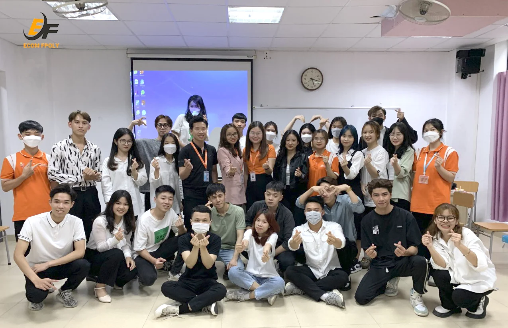

“ECOM FPOLY – SỐNG GẤP LÊN” – Câu lạc bộ ‘đầu tiên’ và ‘duy nhất’ dành riêng cho sinh viên chuyên ngành Digital Marketing
Câu lạc bộ THƯƠNG MẠI ĐIỆN TỬ ECOM FPOLY là câu lạc bộ chuyên ngành trực thuộc sự quản lý của bộ môn Digital Marketing (Thương mại điện tử) – Trường Cao Đẳng FPT Polytechnic Hà Nội.
Được thành lập 09/2021, Ecom FPoly hiện vẫn đang có những bước phát triển với nhiều hoạt động cùng kết quả tích cực. Với sự hỗ trợ tận tình từ cô Phạm Thị Như Quỳnh – Quyền Chủ nhiệm Bộ môn Digital Marketing (Thương mại điện tử), cùng sự đồng hành của cô Nguyễn Thị Thu Loan và hỗ trợ “thực chiến” bởi các giảng viên giàu kinh nghiệm như thầy Nguyễn Trung Kiên, thầy Nguyễn Phúc Thắng, thầy Tạ Trung Kiên,… CLB này được kỳ vọng sẽ tạo nên những điểm nhấn mới trong hoạt động học tập cũng như những cuộc thi có tính học thuật cao.

Các thành viên của Ecom FPoly.
Tất nhiên, Ecom FPoly cũng là CLB đầu tiên và duy nhất dành riêng cho các bạn sinh viên chuyên ngành Digital Marketing. Tại đây, các bạn sinh viên không những được giao lưu học hỏi với những thầy cô có chuyên môn cao, giàu kinh nghiệm trong ngành, được tham gia dự án như những thực tập sinh, mà còn được thoải mái “bật chế độ bay lên” khi cùng nhau tham gia sự kiện.
Với sự dẫn dắt và chỉ bảo nhiệt tình của các thầy cô, Ecom FPoly không chỉ mang đến cho các bạn sinh viên kiến thức chuyên ngành, các kĩ năng mềm cần thiết mà còn mang đến rất nhiều niềm vui, sự gắn kết giữa các thành viên.
Hằng tuần, các bạn sinh viên sẽ được tham gia các sự kiện lớn nhỏ do câu lạc bộ tổ chức. Và điều đặc biệt tại Ecom đó chính là các thành viên sẽ có những sự kiện dành riêng cho bản thân mình, sẽ được đứng trên sân khấu thể hiện mình, thoải mái chia sẻ kinh nghiệm học tập, tâm sự những câu chuyện đời, tình yêu hay những câu chuyện truyền cảm hứng đến tất cả mọi người.
Mục tiêu hoạt động của Ecom FPoly
“Trẻ trung – Năng động – Cọ xát”, đó là mục tiêu mà Ecom FPoly hướng tới với mong muốn tạo ra sân chơi để các bạn sinh viên có cơ hội gặp gỡ, giao lưu kiến thức, rèn luyện kỹ năng, bổ sung những thiếu sót và khai phá tiềm năng bản thân. Qua đó, chính bản thân các bạn sẽ mở ra những cánh cửa mới trên con đường sự nghiệp tương lai.
Vinh danh các thành viên Ecom FPoly có thành tích tốt trong kì học.